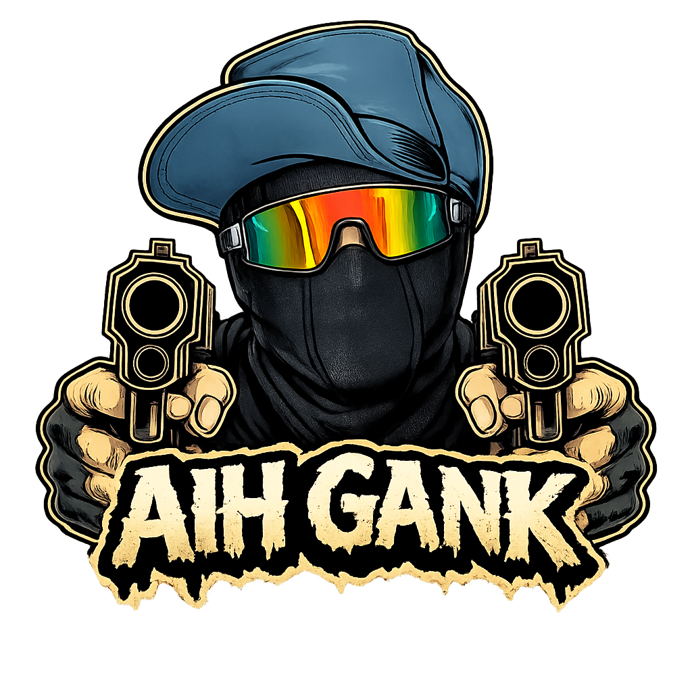

World building
Map, terrain, dan penataan environment dengan fokus pada atmosfer serta pengalaman pemain.
ROBLOX DEVELOPER & WORLD BUILDER
Halo, saya Bachtiar Aditya.
Biasa dipanggil Adit atau Tahu Bulat. Saya membangun map, merancang pengalaman, dan menghidupkan ide di Roblox.
Dari sebuah referensi,
jadi tempat untuk bereksplorasi.
 BUILT IN ROBLOX STUDIO
BUILT IN ROBLOX STUDIO
Worlds worth
getting lost in.
01 / PILIHAN KARYA
Dari environment hingga sistem di baliknya. Pilih sebuah karya untuk melihat proses dan detailnya.
02 / DI BALIK KARYA
Rasa penasaran tentang cara game dibuat membawa saya ke Roblox Studio. Sisanya adalah proses mencoba, belajar, dan membuat lagi.
Adit / Tahu Bulat
Saya ingin membuat tempat yang bukan cuma dilihat, tapi juga dirasakan.
Sejak usia 13 tahun, saya penasaran dengan cara video game dirancang. Saya mulai mengenal Roblox Studio pada 2021, lalu kembali aktif pada akhir 2024 dengan fokus pada map dan environment.
Saya membangun dari referensi visual, memperhatikan atmosfer, detail, dan pengalaman pemain. Sekarang saya terus belajar scripting, optimasi, UI/UX, serta kolaborasi dalam pengembangan game.

Total kunjungan game
Proyek dikerjakan
Proyek terjual
Mulai mengenal Roblox Studio
Map, terrain, dan penataan environment dengan fokus pada atmosfer serta pengalaman pemain.
Mengembangkan mekanik game, sistem modular, dan debugging sambil terus mendalami Lua / Luau.
Belajar merancang antarmuka yang jelas dan menyatu dengan pengalaman bermain di Roblox.
03 / HALL OF FAME
Momen saat kreator memainkan map buatan saya. Terima kasih sudah menjadi bagian dari ceritanya.
04 / MULAI PERCAKAPAN
GOOD WORLDS START WITH A HELLO.Untuk kolaborasi, ngobrol soal Roblox, atau sekadar menyapa. Temui saya di Discord.